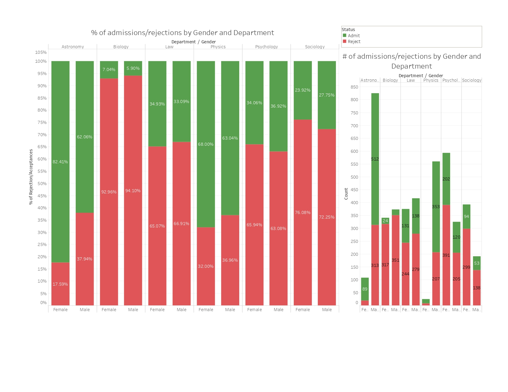
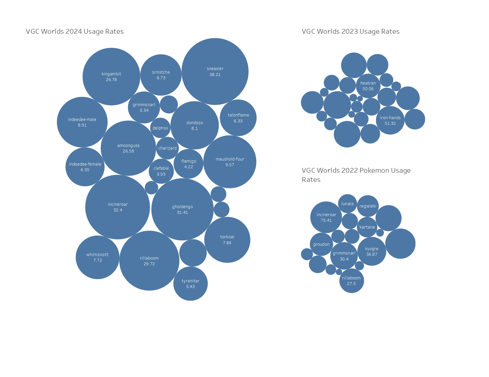
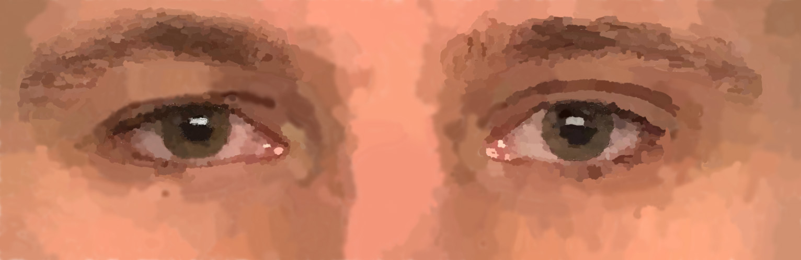

Projects & Portfolio
Featured Projects & Experience
Coral Bleaching Severity Analysis
Skills: R, Statistical Analysis, Data Visualization, Presentation
A comprehensive research project analyzing coral bleaching severity using statistical methods in R. One of my most polished presentations, completed as a successful group project with detailed reports and visualizations.


Sales Forecasting for Primex Plastics
Skills: Python, Machine Learning, ARIMA, Time Series Analysis, Business Analytics
Role: Corporate IT Intern (Sep 2024 - Jan 2025)
Developed a Python-based time series forecasting model to support corporate sales planning. Applied ARIMA models to analyze 8 years of historical sales data and improve forecast accuracy. Collaborated with stakeholders to maintain and operate the sales forecasting project, demonstrating the ability to deliver results independently in specialized domains.
College Admissions Data Visualization
Skills: Tableau, Data Visualization, Statistical Analysis
Created clear and impactful visualizations analyzing college admissions data with a focus on gender-based disparities. This is my most confident visualization work, demonstrating analytical insights into data that impacts multiple groups.

Pokémon VGC Worlds Usage Analysis
Skills: Tableau, Data Visualization, Competitive Analysis
Comprehensive visualization project analyzing Pokémon usage patterns in competitive VGC tournaments worldwide. Demonstrates expertise in extracting actionable insights from complex datasets.

AI Triage Assistant Prototype
Skills: Web Development, Figma Design, GitHub, HTML/CSS, Databases, APIs, Human-Centered AI
Capstone Project (Aug 2025 - Dec 2025)
Designed and developed an AI-based healthcare triage assistant prototype with Human-Centered AI (HCAI) and Human-in-the-Loop (HITL) principles at the core. Evaluated healthcare AI use cases to support ethical and safe AI deployment. View the live prototype: zahouse.github.io/triage-ai-prototype
Wildfire AI Detection System
Skills: AI/Machine Learning, Computer Vision, System Design, Training/Testing Data Splits
Prototyped an AI system using photodetection to automatically identify wildfires. Showcases real-world applications of AI technology that could significantly improve wildfire prevention and response efforts.

Generative AI Misinformation Detector
Skills: Python, Machine Learning, Collaborative Work, Presentations, Technical Writing
A forward-thinking project addressing misinformation in the AI age. Demonstrates machine learning expertise, collaborative abilities, and communication skills. Included proposal, presentation, and comprehensive reports.
CEDH Competitive Magic Analysis Dashboard
Skills: Web Development, Dynamic Visualization, Data Analysis, HTML/CSS
Built an interactive dashboard analyzing competitive Magic: The Gathering CEDH format data. Demonstrates expertise in creating dynamic visualizations that extract meaningful patterns from complex competitive scenarios.
Work Experience
Corporate IT Intern - Primex Plastics
September 2024 - January 2025
Developed Python-based time series forecasting models using ARIMA techniques to support sales planning. Analyzed 8 years of historical sales data to improve forecast accuracy and collaborated with stakeholders on project implementation. Demonstrated ability to deliver analytical solutions independently without prior expertise in the specific domain.
Academic & Research Projects
Study Abroad Website Development
Haaga-Helia University, Helsinki, Finland (May 2024)
Collaborated with international students to design and develop a website as part of a study abroad program. Gained exposure to international development practices and cross-cultural collaboration in technical projects.
Accenture Data Analytics & Visualization Simulation
Skills: Excel, Data Analysis, Data Visualization, PowerPoint, Data Storytelling
Completed a data analytics simulation as a Data Analyst at Accenture. Cleaned and modeled 7 datasets to identify content performance trends. Developed a PowerPoint presentation and recorded a video walkthrough to communicate findings to stakeholders, practicing executive-level data storytelling.
Strategic Recommendation Report
Skills: Market Research, Survey Design, Data Analysis, Technical Writing
Conducted market and social media research to develop a strategic recommendation report for a local business. Designed a customer survey, analyzed responses to identify trends, and synthesized findings into professional documentation. Collaborated on research planning and data organization to support business decision-making.
Universal Design Paper
Explored accessible design principles and their importance in digital products. My background in media arts and sciences provides unique insights into creating more inclusive user experiences across all abilities.
Surveillance & Ethics Paper
Critical analysis of surveillance systems and the ethical implications of data collection. Examined how surveillance technologies must be designed with careful consideration for all stakeholders involved.
Semantic Web & AI Paper
Technical exploration of semantic web technologies and their relationship to artificial intelligence, including historical context and modern applications.
Creative Projects
Eyes Project
Skills: Creative Coding, Image Processing, Multimedia
A creative project demonstrating versatility in technical and creative skills, producing visual art and multimedia outputs.

Urban Legends - The Kentucky Goblin
Skills: Video Production, Editing, Creative Direction
A creative video project demonstrating versatility in media production and genre-specific storytelling. Showcases commitment to projects and ability to work through technical challenges.
Resume
Detailed resume available upon request. Please reach out via the contact page for more information about my experience and qualifications.